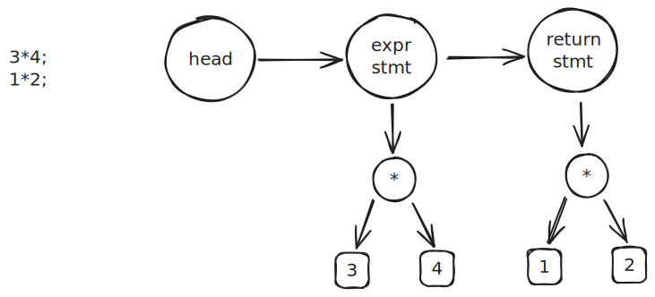
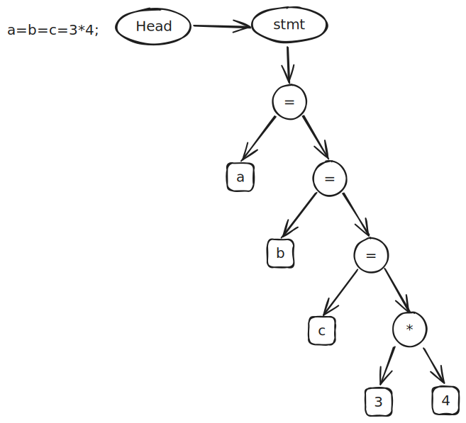

支持多段
支持 ; 分割多段表达式，每段都编译，执行时只有最后一段结果保留

词法分析
; 包含在标点符号中，不必修改
语法分析
在原有的语法树的基础上，扩充对多个语段的支持， 在 Node 结构体中增加 next 字段, 指向不同的语段
struct Node {
NodeKind kind;
Node *next;
Node *lhs;
Node *rhs;
int val;
};
更新形式语言
// program = stmt*
// stmt = expr_stmt
// expr_stmt = expr ";"
// expr = equality
// equality = relational ("==" relational | "!=" relational)*
// relational = add ("<" add | "<=" add | ">" add | ">=" add)*
// add = mul ("+" mul | "-" mul)*
// mul = unary ("*" unary | "/" unary)*
// unary = ("+" | "-") unary | primary
// primary = "(" expr ")" | num
expr_stmt中将语法树挂载 rhs上
static Node *expr_stmt(Token **rest, Token *token) {
Node *node = new_node_unary(ND_EXPR_STMT, expr(&token, token));
*rest = skip(token, ";");
return node;
}
stmt 节点的 next 指向下一个 stmt
Node *parse(Token *token) {
Node head = {};
Node *cur = &head;
while (token->kind != TK_EOF) {
cur->next = stmt(&token, token);
cur = cur->next;
};
return head.next;
}
语义分析
增加对于 ND_EXPR_STMT 类型的 Node 的解析
static void gen_stmt(Node *node) {
if (node->kind == ND_EXPR_STMT) {
gen_expr(node->rhs);
return;
}
error("invalid statement");
}
void codegen(Node *node) {
printf(" .globl main\n");
printf("main:\n");
for (Node *n = node; n; n = n->next) {
gen_stmt(n);
assert(STACK_DEPTH == 0);
}
printf(" ret\n");
}
支持单字母本地变量
本地变量是一种新的token，需要增加token种类
本地变量代表的是内存地址，支持单字母本地变量需要为变量计算内存地址
变量是一种新的节点，赋值语句是一种新的语法，需要增加赋值语句节点
赋值是一种新的语法，需要新的语义分析，同时还需要支持 a=b=c=1的递归赋值

词法分析
单字母对应[a,z], 增加相应的字符判断即可，同时增加 ident token种类
语法分析
更新形式语言
// program = stmt*
// stmt = expr_stmt
// expr_stmt = expr ";"
// expr = assign
// assign = equality ("=" assign)?
// equality = relational ("==" relational | "!=" relational)*
// relational = add ("<" add | "<=" add | ">" add | ">=" add)*
// add = mul ("+" mul | "-" mul)*
// mul = unary ("*" unary | "/" unary)*
// unary = ("+" | "-") unary | primary
// primary = "(" expr ")" | ident｜ num
递归 assign 实现
// assign = equality ("=" assign)?
static Node *assign(Token **rest, Token *token) {
Node *node = equality(&token, token);
// a=b=1;
if (equal(token, "="))
node = new_node_bin(ND_ASSIGN, node, assign(&token, token->next));
*rest = token;
return node;
}
primary 中增加对于 ident 解析
语义分析
栈布局
//-------------------------------// sp
// fp fp = sp-8
//-------------------------------// fp
// 'a' fp-8
// 'b' fp-16
// ...
// 'z' fp-208
//-------------------------------// sp=sp-8-208
// 表达式计算
//-------------------------------//
地址计算
// 计算给定节点的内存地址
static void gen_addr(Node *node) {
if (node->kind == ND_VAR) {
int offset = (node->name - 'a') * 8;
printf(" addi a0, fp, %d\n", -offset);
return;
}
error("not an lvalue");
}
assign 语义
case ND_ASSIGN:
// 左值
gen_addr(node->lhs);
push();
// 右值
gen_expr(node->rhs);
// 栈上保存的是左值内存地址, 弹出到 a1 寄存器
pop("a1");
printf(" sd a0, 0(a1)\n");
return;
同时也增加了 sp 与 fp 的保存与恢复
printf(" addi sp, sp, -8\n");
printf(" sd fp, 0(sp)\n");
// 将当前的 sp 设置为 fp
printf(" mv fp, sp\n");
// 恢复 sp
printf(" mv sp, fp\n");
// 恢复上一个 fp
printf(" ld fp, 0(sp)\n");
printf(" addi sp, sp, 8\n");